Docs › Executable numerical recipes › Coupled execution and iterative algebra
10.2 Coupled execution and iterative algebra
10.2.1 Solve instantaneous complex feedback
This algebraic state satisfies a linear complex feedback map at one time. The bound closure uses the chosen nonlinear solver and the exact feedback directional derivative. The four sparsity rows cover the real and imaginary coordinates.
This listing exercises AlgebraicClosure.
import numpy as np
from onesim.numerics.coupled_systems import AlgebraicClosure
from onesim.numerics.linear import SparseDirect
from onesim.numerics.nonlinear import Newton
from onesim.simulation import SimulationDependencies
closure = AlgebraicClosure(
nonlinear_solver=Newton(
linear_solver=SparseDirect(), relative_tolerance=1e-12,
absolute_tolerance=1e-13,
),
).bind(dependencies=SimulationDependencies(), context={})
gain = np.array([[0.1 + 0.2j, 0.2], [0.1j, 0.15 - 0.1j]])
drive = np.array([0.5 + 0.2j, 1.0 - 0.1j])
state = closure.solve(
np.zeros(2, dtype=complex),
lambda z: gain @ z + drive,
lambda z, dz: gain @ dz,
(tuple(range(4)),) * 4,
)
np.testing.assert_allclose(state, np.linalg.solve(np.eye(2) - gain, drive))
print(state)10.2.2 Advance a one-way thermal cascade
The source temperature becomes the receiver ambient temperature at the coupling boundary. The declared order follows that one-way dependency. A cooler receiver initially warms while the source cools.
This listing exercises SequentialCoupling.
import numpy as np
import matplotlib.pyplot as plt
import onesimulation_plot_theme as theme
from onesim.cad.geometry import LumpedDomain
from onesim.meshing import LumpedMesh
from onesim.numerics.discretization import LumpedParameters, Numerics
from onesim.numerics.coupled_systems import SequentialCoupling
from onesim.numerics.field_transfer import GlobalValueTransfer
from onesim.numerics.time import ClassicalRungeKutta4
from onesim.physics.systems import ThermalCapacitance
from onesim.simulation import Problem, Simulation
from onesim.simulation.field_connections import FieldCoupling
from onesim.simulation.initial_conditions import InitialValue
domain = LumpedDomain()
source = ThermalCapacitance(
domain=domain.system, model_id="source", heat_capacity=1,
conductance=1, ambient_temperature=300,
)
receiver = ThermalCapacitance(
domain=domain.system, model_id="receiver", heat_capacity=1,
conductance=1, ambient_temperature=None,
)
problem = Problem(
name="Thermal cascade", geometry=domain, physics=(source, receiver),
initial_conditions=(
InitialValue(source.temperature, 400),
InitialValue(receiver.temperature, 300),
),
couplings=(FieldCoupling(
source=source.temperature, target=receiver.ambient,
transfer=GlobalValueTransfer(),
),),
)
method = Numerics(
spatial=LumpedParameters(), time_integrator=ClassicalRungeKutta4()
)
result = Simulation(
problem=problem, mesh={body: LumpedMesh(domain) for body in (source, receiver)},
numerics={source: method, receiver: method},
coupling_solver=SequentialCoupling(
transient_systems=(source, receiver), stationary_systems=(),
order=(source, receiver),
),
).run(start_time=0, end_time=3, time_step=0.025)
theme.use_theme()
fig, ax = plt.subplots(figsize=(6.8, 3.8), layout="constrained")
for body in (source, receiver):
field = result.field(body.temperature)
values = [np.asarray(field.at(t).values).item() for t in result.times]
ax.plot(result.times, values, label=body.model_id)
assert max(values) > 300
ax.set(xlabel="Time [s]", ylabel="Temperature [K]")
ax.legend(frameon=False)
plt.show()
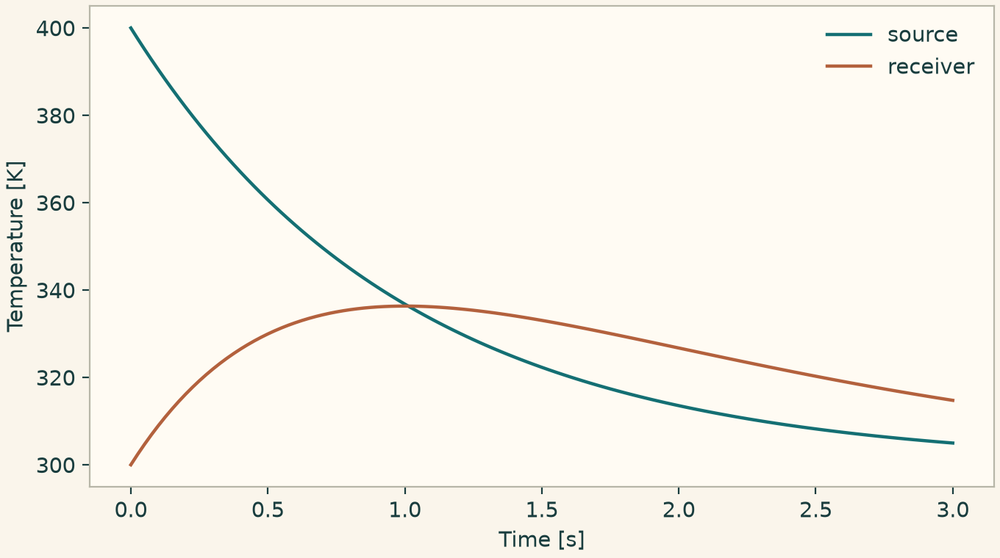
Temperature histories of a sequentially coupled thermal cascade.
10.2.3 Transport a periodic wave with three flux operators
Compare the translated wave with a conservative boundary-flux FD method, flux-split WENO on points, and first-order upwind FV on cell averages. The periodic seam is supplied explicitly. FD WENO reconstructs split fluxes, while the FV reconstructors in a later listing reconstruct cell-average states.
This listing exercises BoundaryFluxDifference, GlobalLaxFriedrichsSplit, WENO5Flux, WENOFluxDifference, MonotoneUpwind.
import numpy as np
import matplotlib.pyplot as plt
import onesimulation_plot_theme as theme
from onesim.cad.d1 import Line
from onesim.meshing import PeriodicPair, StructuredLineMesher
from onesim.numerics.discretization import Numerics
from onesim.numerics.fdm import (
BoundaryFluxDifference, FiniteDifference, GlobalLaxFriedrichsSplit,
PolynomialDifference, WENO5Flux, WENOFluxDifference,
)
from onesim.numerics.fvm import FiniteVolume, MonotoneUpwind
from onesim.numerics.time import ClassicalRungeKutta4
from onesim.physics.hydrodynamics import PhaseAdvection
from onesim.simulation import Problem, Simulation
from onesim.simulation.initial_conditions import InitialValue
from onesim.simulation.problem_definition.boundaries import PeriodicBoundary
line = Line(start=(0, 0, 0), end=(1, 0, 0))
phase = PhaseAdvection(
domain=line.line, velocity=1, first_density=1000, second_density=1,
)
wave = lambda x: 0.4 + 0.2 * np.sin(2 * np.pi * x)
problem = Problem(
name="Periodic flux comparison", geometry=line, physics=(phase,),
initial_conditions=(InitialValue(phase.volume_fraction, wave),),
boundary_conditions=(PeriodicBoundary(
physics=phase, pair=PeriodicPair(line.boundaries.start, line.boundaries.end),
),),
)
mesh = StructuredLineMesher(cells=64).generate(line)
methods = {
"Boundary-flux FD": FiniteDifference(gradient=BoundaryFluxDifference(
derivative=PolynomialDifference(accuracy_order=4)
)),
"Flux-split WENO FD": FiniteDifference(gradient=WENOFluxDifference(
flux_splitting=GlobalLaxFriedrichsSplit(), reconstruction=WENO5Flux()
)),
"Monotone upwind FV": FiniteVolume(convection=MonotoneUpwind()),
}
theme.use_theme()
fig, ax = plt.subplots(figsize=(6.8, 3.8), layout="constrained")
x = np.linspace(0, 1, 250)
ax.plot(x, wave(x - 0.12), "k--", label="Exact translation")
for name, spatial in methods.items():
result = Simulation(
problem=problem, mesh=mesh,
numerics=Numerics(spatial=spatial, time_integrator=ClassicalRungeKutta4()),
).run(start_time=0, end_time=0.12, time_step=0.003)
field = result.field(phase.volume_fraction)
values = np.asarray(field.values)
assert np.all(np.isfinite(values))
ax.plot(field.space.dof_coordinates[:, 0], values, label=name)
ax.set(xlabel="Position [m]", ylabel="Volume fraction")
ax.legend(frameon=False)
plt.show()
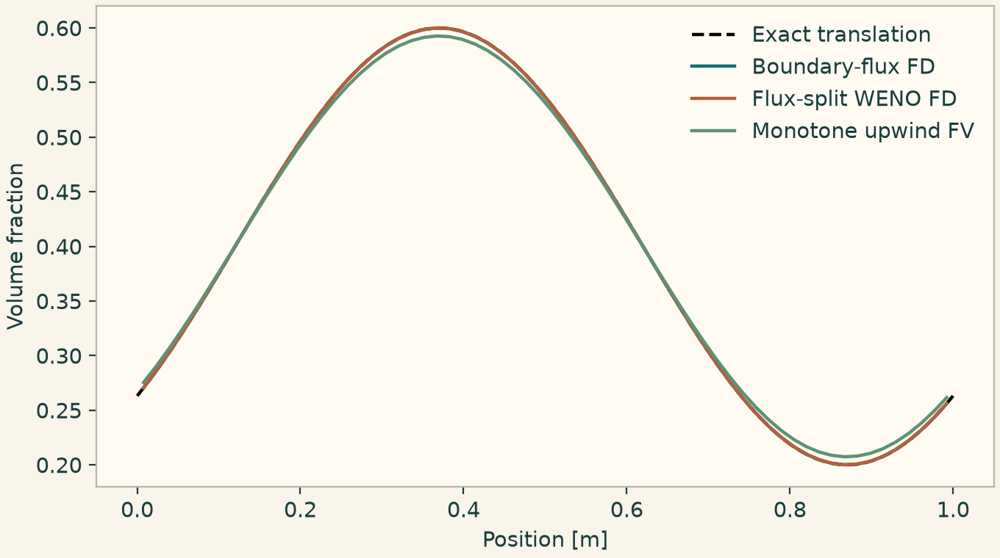
Periodic translation with three conservative spatial discretizations.
10.2.4 Balance water depth over a sloping bed
Use the same hydrostatic state in a summation-by-parts finite difference discretization and in a mass-lumped continuous finite element graph discretization. Inspect the surface elevation, which should remain level under the reflecting wall conditions.
This listing exercises SummationByPartsDifference, HydrostaticFluxDifference, RowSumLumping, HydrostaticGraphViscosity.
import numpy as np
import matplotlib.pyplot as plt
import onesimulation_plot_theme as theme
from onesim.cad.d1 import Line
from onesim.meshing import StructuredLineMesher
from onesim.numerics.discretization import NodalInterpolation, Numerics
from onesim.numerics.fdm import (
FiniteDifference, HydrostaticFluxDifference, SummationByPartsDifference,
)
from onesim.numerics.fem import (
FiniteElement, HydrostaticGraphViscosity, Lagrange, RowSumLumping,
)
from onesim.numerics.fvm import Rusanov
from onesim.numerics.linear import SparseDirect
from onesim.numerics.time import ForwardEuler, TimeStepLimits
from onesim.physics.hydrodynamics import TopographicShallowWater, WetDryShallowWaterDomain
from onesim.simulation import Problem, Simulation
from onesim.simulation.initial_conditions import InitialValue
from onesim.simulation.problem_definition.boundaries import ReflectingWall
line = Line(start=(0, 0, 0), end=(10, 0, 0))
bed = lambda x: 0.1 * x
water = TopographicShallowWater(domain=line.line, bed_elevation=bed)
problem = Problem(
name="Lake at rest", geometry=line, physics=(water,),
initial_conditions=(
InitialValue(water.depth, lambda x: 2.0 - bed(x)),
InitialValue(water.discharge, 0.0),
),
boundary_conditions=(ReflectingWall(physics=water, boundary=line.boundaries.all),),
)
mesh = StructuredLineMesher(cells=48).generate(line)
domain = WetDryShallowWaterDomain()
methods = {
"SBP flux difference": FiniteDifference(
gradient=SummationByPartsDifference(accuracy_order=4),
provider=HydrostaticFluxDifference(flux=Rusanov(), invariant_domain=domain),
),
"Hydrostatic graph viscosity": FiniteElement(
element=Lagrange(1), convection=Rusanov(),
stabilization=HydrostaticGraphViscosity(
mass=RowSumLumping(), invariant_domain=domain,
),
initialization=NodalInterpolation(),
),
}
theme.use_theme()
fig, ax = plt.subplots(figsize=(6.8, 3.8), layout="constrained")
s = np.linspace(0, 10, 160)
ax.fill_between(s, 0, bed(s), alpha=0.25, label="Bed")
for j, (name, spatial) in enumerate(methods.items()):
result = Simulation(
problem=problem, mesh=mesh,
numerics=Numerics(
spatial=spatial, time_integrator=ForwardEuler(),
linear_solver=SparseDirect() if isinstance(spatial, FiniteElement) else None,
step_limits=TimeStepLimits(stability_safety_factor=0.8),
),
).run(start_time=0, end_time=0.02, time_step=0.001)
field = result.field(water.depth)
x = field.space.dof_coordinates[:, 0]
elevation = np.asarray(field.values) + bed(x)
np.testing.assert_allclose(elevation, 2.0, atol=1e-8)
ax.plot(x[j::4], elevation[j::4], ("o" if j == 0 else "+"), label=name)
ax.set(xlabel="Position [m]", ylabel="Elevation [m]", ylim=(0, 2.25))
ax.legend(frameon=False)
plt.show()
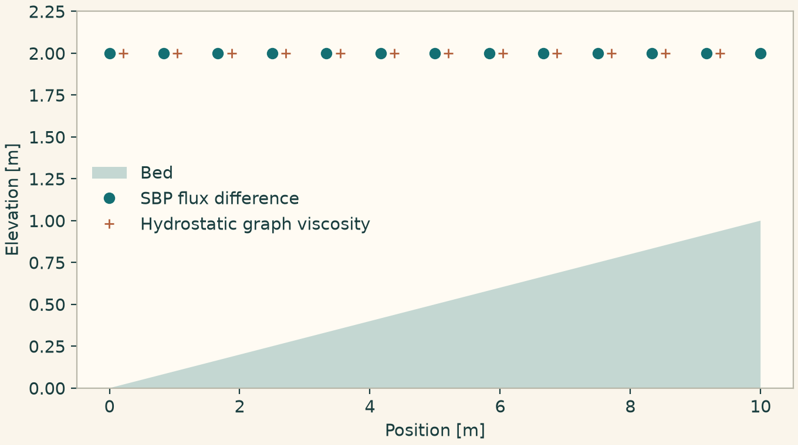
Hydrostatic equilibrium over a sloping bed using FD and continuous FE.
10.2.5 Compare slope limiter responses
Feed the same forward difference and a sweep of backward differences to the scalar limiters. The last two calls limit a cell using its neighbor values and a proposed face increment.
This listing exercises MonotonizedCentralLimiter, SuperbeeLimiter, VenkatakrishnanLimiter, BarthJespersenLimiter, TvbLimiter.
import numpy as np
import matplotlib.pyplot as plt
import onesimulation_plot_theme as theme
from onesim.numerics.fvm import (
BarthJespersenLimiter, MinmodLimiter, MonotonizedCentralLimiter,
SuperbeeLimiter, TvbLimiter, VanLeerLimiter, VenkatakrishnanLimiter,
)
ratio = np.linspace(-1.0, 3.0, 300)
limiters = {
"Minmod": MinmodLimiter(), "MC": MonotonizedCentralLimiter(),
"Superbee": SuperbeeLimiter(), "Van Leer": VanLeerLimiter(),
"TVB": TvbLimiter(base_limiter=MinmodLimiter()),
}
theme.use_theme()
fig, ax = plt.subplots(figsize=(6.8, 3.8), layout="constrained")
for name, limiter in limiters.items():
slope = [limiter.limit(r, 1.0) for r in ratio]
ax.plot(ratio, slope, label=name)
neighbors = np.array([0.8, 1.3])
for limiter in (BarthJespersenLimiter(), VenkatakrishnanLimiter()):
factor = limiter.cell_factor(1.0, neighbors, 0.8)
print(type(limiter).__name__, factor)
assert 0 <= factor <= 1
ax.set(xlabel="Backward / forward difference", ylabel="Limited slope")
ax.legend(frameon=False, ncol=2)
plt.show()
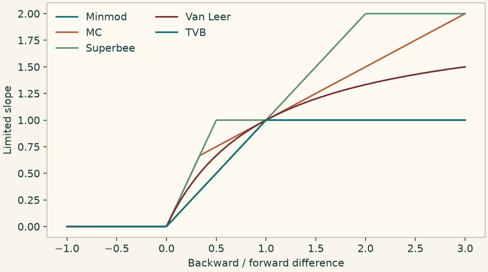
Slope limiter response at a fixed forward difference of one.
10.2.6 Reconstruct physical face traces with ENO and WENO
Start with exact cell averages of a smooth periodic wave. Compare the reconstructed right trace against the exact point value at each right face. The input has shape one field by number of cells.
This listing exercises Eno2Reconstructor, Eno3Reconstructor, Weno3Reconstructor, Weno5Reconstructor.
import numpy as np
import matplotlib.pyplot as plt
import onesimulation_plot_theme as theme
from onesim.numerics.fvm import (
Eno2Reconstructor, Eno3Reconstructor, Weno3Reconstructor, Weno5Reconstructor,
)
faces = np.linspace(0, 1, 65)
width = np.diff(faces)
primitive = lambda x: -np.cos(2 * np.pi * x) / (2 * np.pi)
mean = (np.diff(primitive(faces)) / width)[None, :]
exact = np.sin(2 * np.pi * faces[1:])
theme.use_theme()
fig, ax = plt.subplots(figsize=(6.8, 3.8), layout="constrained")
for choice in (
Eno2Reconstructor(), Eno3Reconstructor(),
Weno3Reconstructor(), Weno5Reconstructor(),
):
reconstruction = choice.bind(cell_widths=width)
left, right = reconstruction.reconstruct(mean, periodic=True)
error = np.abs(right[0] - exact)
assert np.max(error) < 0.02
ax.semilogy(faces[1:], np.maximum(error, 1e-15), label=type(choice).__name__)
ax.set(xlabel="Right face position [m]", ylabel="Absolute trace error")
ax.legend(frameon=False, ncol=2)
plt.show()
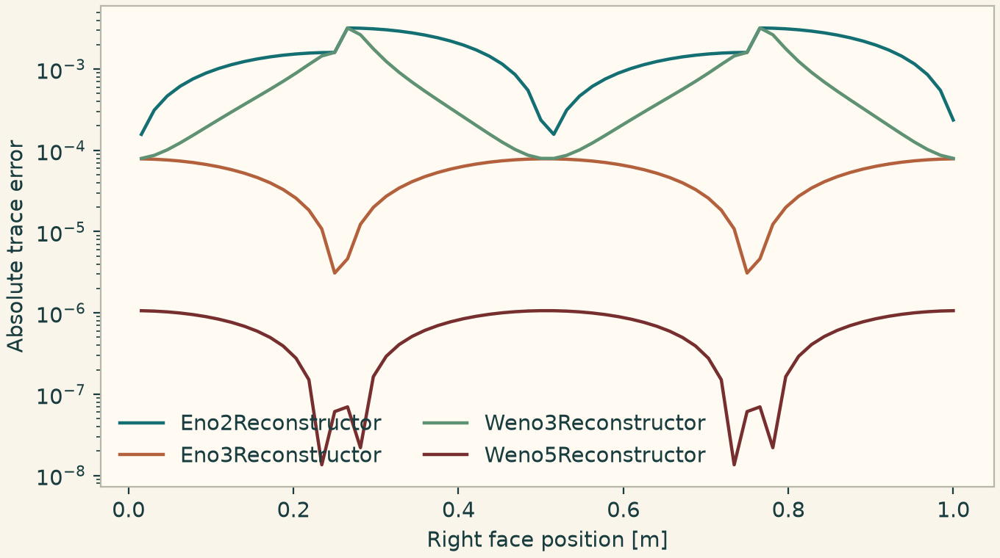
Right-trace errors from exact periodic cell averages.
10.2.7 Repair nonphysical face states
A convex guard scales Euler traces towards an admissible cell mean. A separate shallow-water trace policy limits negative depths and enforces the dry-state condition. The examples use component rows and cell columns.
This listing exercises ConvexInvariantDomain, WetDryTraceScaling.
import numpy as np
from onesim.numerics.fvm import ConvexInvariantDomain, WetDryTraceScaling
from onesim.physics.hydrodynamics import WetDryShallowWaterDomain
from onesim.physics.hydrodynamics.compressible.models.compressible_state import (
recover_compressible_state,
)
def admissible_gas(values):
recover_compressible_state(values, (values.shape[1],))
mean = np.array([[1.0, 0.1], [0.0, 0.0], [1.0, 0.01]])
slope = np.array([[2.0, 0.0], [0.0, 0.5], [0.0, 0.0]])
guard = ConvexInvariantDomain().bind(admissible=admissible_gas)
left, right = guard.limit(mean, mean - slope, mean + slope)
for trace in (left, right):
admissible_gas(trace)
np.testing.assert_allclose((left + right) / 2, mean)
water = WetDryShallowWaterDomain()
guard = WetDryTraceScaling().bind(admissible=water.admissible)
mean = np.array([[1.0, 2.0, 0.0], [0.2, -0.1, 0.0]])
left = np.array([[-0.2, 2.1, 0.0], [0.8, -0.2, 0.0]])
right = np.array([[1.1, -0.3, 0.0], [-0.3, 0.2, 0.0]])
left, right = guard.limit(mean, left, right)
for trace in (left, right):
water.admissible(trace)
print(left[0], right[0])10.2.8 Compare continuous and discontinuous heat operators
Advect and diffuse a periodic temperature wave. Compare continuous residual tests and derivative-jump stabilization with a discontinuous space using symmetric interior penalty diffusion plus an optional solution-jump term. The analytic trace gives a shared reference. Distinct markers identify curves that nearly coincide.
This listing exercises SUPG, GLS, CIP, DGJumpPenalty, SymmetricInteriorPenalty.
import numpy as np
import matplotlib.pyplot as plt
import onesimulation_plot_theme as theme
from onesim.cad.d1 import Line
from onesim.meshing import PeriodicPair, StructuredLineMesher
from onesim.numerics.discretization import Numerics
from onesim.numerics.fem import (
CIP, DGJumpPenalty, DiscontinuousLagrange, FiniteElement,
GLS, Lagrange, SUPG, SymmetricInteriorPenalty,
)
from onesim.numerics.fvm import Rusanov
from onesim.numerics.linear import SparseDirect
from onesim.numerics.nonlinear import Newton
from onesim.numerics.time import BackwardEuler
from onesim.physics.heat_transfer import HeatAdvectionDiffusion
from onesim.simulation import Problem, Simulation
from onesim.simulation.initial_conditions import InitialValue
from onesim.simulation.problem_definition.boundaries import PeriodicBoundary
line = Line(start=(0, 0, 0), end=(1, 0, 0))
speed, diffusivity = 0.6, 0.01
heat = HeatAdvectionDiffusion(
domain=line.line, velocity=speed, thermal_diffusivity=diffusivity,
)
problem = Problem(
name="Stabilized heat transport", geometry=line, physics=(heat,),
initial_conditions=(InitialValue(
heat.temperature, lambda x: 300 + np.sin(2 * np.pi * x)
),),
boundary_conditions=(PeriodicBoundary(
physics=heat, pair=PeriodicPair(line.boundaries.start, line.boundaries.end)
),),
)
mesh = StructuredLineMesher(cells=32).generate(line)
choices = {
"SUPG": FiniteElement(element=Lagrange(2), stabilization=SUPG(tau=0.003)),
"GLS": FiniteElement(element=Lagrange(2), stabilization=GLS(tau=0.003)),
"CIP": FiniteElement(element=Lagrange(2), stabilization=CIP(penalty=0.01)),
"SIP + DG jump": FiniteElement(
element=DiscontinuousLagrange(2), convection=Rusanov(),
diffusion=SymmetricInteriorPenalty(),
stabilization=DGJumpPenalty(coefficient=0.01),
),
}
linear = SparseDirect()
x = np.linspace(0.003, 0.997, 201)
end = 0.08
exact = 300 + np.exp(-4 * np.pi**2 * diffusivity * end) * np.sin(
2 * np.pi * (x - speed * end)
)
theme.use_theme()
fig, ax = plt.subplots(figsize=(6.8, 3.8), layout="constrained")
for j, (label, spatial) in enumerate(choices.items()):
result = Simulation(
problem=problem, mesh=mesh, numerics=Numerics(
spatial=spatial, linear_solver=linear, time_integrator=BackwardEuler(),
nonlinear_solver=Newton(linear_solver=linear, jacobian="analytic"),
),
).run(start_time=0, end_time=end, time_step=0.004)
actual = np.asarray(result.field(heat.temperature).evaluate(
np.column_stack((x, np.zeros_like(x), np.zeros_like(x)))
)).ravel()
assert np.max(abs(actual - exact)) < 0.04
ax.plot(x, 1000 * (actual - exact), label=label,
marker=("o", "s", "^", "x")[j], markersize=3, markevery=(j * 5, 20))
ax.set(xlabel="Position [m]", ylabel="Temperature error [mK]")
ax.legend(frameon=False, ncol=2)
plt.show()
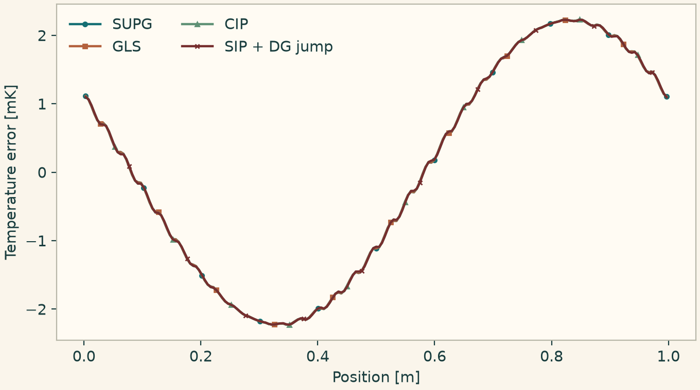
Final pointwise temperature error for four FE stabilizations.
10.2.9 Limit a DG polynomial and check admissibility
Bind a DG limiter on a physical line and call it through the stage limiter protocol. The second part evaluates scalar bounds and two-field separation with mean-centered scaling. Each column is a sample of the same physical state.
This listing exercises DGPolynomialLimiter, StateLimiterPort, ScalarInterval, OrderedFields.
import numpy as np
import matplotlib.pyplot as plt
import onesimulation_plot_theme as theme
from onesim.cad.d1 import Line
from onesim.meshing import StructuredLineMesher
from onesim.numerics.fem import (
DGPolynomialLimiter, DiscontinuousLagrange, OrderedFields,
ScalarInterval, StateLimiterPort,
)
from onesim.numerics.fvm import MinmodLimiter
line = Line(start=(0, 0, 0), end=(1, 0, 0))
space = DiscontinuousLagrange(2).bind(
mesh=StructuredLineMesher(cells=24).generate(line)
)
limiter = DGPolynomialLimiter(slope_limiter=MinmodLimiter()).bind(
space=space, model=None, law=None, periodic=True
)
def stage(port: StateLimiterPort, values):
return port.limit(values, time=0.0, stage_id=1)
x = space.dof_arclengths
original = np.array([0.5 + 0.5 * np.sin(2 * np.pi * x)])
limited = stage(limiter, original)
assert np.max(abs(limited - original)) > 1e-6
interval = ScalarInterval("fraction", 0.0, 1.0)
mean = np.array([0.5])
samples = np.array([[-0.1, 0.9, 0.7]])
theta = interval.maximum_scaling(mean, samples)
interval.admissible(mean[:, None] + theta * (samples - mean[:, None]))
order = OrderedFields(lower="cold", upper="warm", minimum_separation=0.25)
mean = np.array([0.4, 0.9])
samples = np.array([[0.4, 0.6], [0.8, 0.7]])
theta = order.maximum_scaling(mean, samples)
order.admissible(mean[:, None] + theta * (samples - mean[:, None]))
assert 0 < theta < 1
theme.use_theme()
fig, ax = plt.subplots(figsize=(6.8, 3.8), layout="constrained")
ax.plot(x, original[0], ".", label="Before limiting")
ax.plot(x, limited[0], "+", label="After limiting")
ax.set(xlabel="DG node position [m]", ylabel="Fraction")
ax.legend(frameon=False)
plt.show()
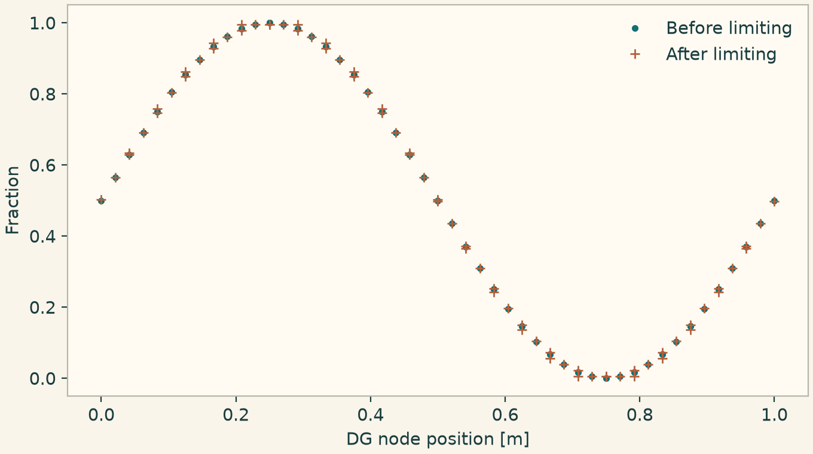
Changes to the DG nodal values after the stage limiter.
10.2.10 Estimate an explicit stability bound from mass and stiffness
Expose the weak mass and stiffness blocks through a small rate fixture. Compare the generalized eigenvalue bound for symmetric diffusion with a contraction bound for a dissipative nonsymmetric operator. The bound is for the frozen Forward Euler update.
This listing exercises ConsistentMassStability, DissipativeMassStability.
from types import SimpleNamespace
import numpy as np
from scipy.sparse import csr_matrix
from onesim.numerics.fem import ConsistentMassStability, DissipativeMassStability
from onesim.numerics.time import ForwardEuler
def weak_block(values):
matrix = csr_matrix(values)
return SimpleNamespace(matrix=SimpleNamespace(
values=matrix.data, shape=matrix.shape, tocsr=lambda: matrix,
pattern=SimpleNamespace(indices=matrix.indices, indptr=matrix.indptr),
))
mass = np.diag([2.0, 2.0])
rules = (
(ConsistentMassStability(), np.array([[4.0, -1.0], [-1.0, 4.0]])),
(DissipativeMassStability(), np.array([[4.0, 1.0], [-1.0, 4.0]])),
)
for rule, stiffness in rules:
rate = SimpleNamespace(
operator=object(), problem_size=2,
weak=lambda t: (
SimpleNamespace(mass=weak_block(mass)),
weak_block(stiffness), np.zeros(2), (),
),
)
dt = rule.maximum_step(
rate=rate, state=np.zeros(2), time=0.0, declaration=ForwardEuler()
)
update = np.eye(2) - dt * np.linalg.solve(mass, stiffness)
assert np.linalg.norm(update, 2) <= 1 + 1e-8
print(type(rule).__name__, dt)10.2.11 Evaluate a volume flux divergence and a facet penalty
Bind the flux interpolator to a real nodal hexahedral space. It returns the physical gradients needed to differentiate local Cartesian flux samples. The facet calculation uses a unit quadrature weight and a normal-gradient jump to show the sign and scaling of the CIP block.
This listing exercises VolumeCIP, InterpolatedFluxDivergence.
import numpy as np
from onesim.cad.d3 import Box
from onesim.meshing import StructuredHexahedralMesher
from onesim.numerics.fem import (
FiniteElement, InterpolatedFluxDivergence, Lagrange, VolumeCIP,
)
box = Box(length=1, width=1, height=1)
mesh = StructuredHexahedralMesher(cells=(2, 2, 2)).generate(box)
space = FiniteElement(element=Lagrange(1)).bind_space(mesh)
flux = InterpolatedFluxDivergence().bind(space=space)
_, weights, _, _, nodes, gradients = flux.element(0)
samples = nodes * np.array([2.0, -1.0, 3.0])
divergence = np.einsum("qia,ia->q", gradients, samples)
np.testing.assert_allclose(divergence, 4.0, atol=1e-12)
cip = VolumeCIP(diffusivity=0.1).bind(space=space, balance=None)
g = np.array([[[-1.0, 0, 0], [1.0, 0, 0]]])
penalty = cip.volume_facet_contributions(
field="temperature", left_cell=0, right_cell=1,
points=np.array([[0.5, 0.25, 0.25]]), weights=np.array([1.0]),
normals=np.array([[1.0, 0, 0]]), left_gradient=g, right_gradient=g,
width=0.5, time=0.0,
)
assert np.linalg.eigvalsh(penalty)[-1] > 0
np.testing.assert_allclose(penalty @ np.ones(4), 0, atol=1e-14)
print(weights.sum(), penalty)10.2.12 Stabilize a mixed velocity and pressure space
Compare Taylor–Hood with grad-div and equal-order elements with PSPG on accelerating Couette flow. The two contribution classes describe local residual blocks from the bound providers. The plot overlays the exact velocity slice and the computed fields.
This listing exercises GradDiv, MixedMomentumContribution, PSPG, MixedContinuityContribution, EqualOrderVelocityPressure.
import numpy as np
import matplotlib.pyplot as plt
import onesimulation_plot_theme as theme
from onesim.cad.d3 import Box
from onesim.materials import NewtonianFluid
from onesim.meshing import StructuredHexahedralMesher
from onesim.numerics.discretization import Numerics
from onesim.numerics.fem import (
EqualOrderVelocityPressure, FiniteElement, GradDiv,
MixedContinuityContribution, MixedMomentumContribution, PSPG, TaylorHood,
)
from onesim.numerics.linear import SparseDirect
from onesim.numerics.nonlinear import Newton
from onesim.numerics.time import BackwardEuler
from onesim.physics.hydrodynamics import FixedVelocity, IncompressibleNavierStokes
from onesim.simulation import Problem, Simulation
from onesim.simulation.field_constraints import MeanValue
from onesim.simulation.initial_conditions import InitialValue
box = Box(length=1, width=1, height=1)
def acceleration(y):
return np.column_stack((y, np.zeros_like(y), np.zeros_like(y)))
def wall(y, t):
return t * acceleration(y)
wall.time_derivative = lambda y, t: acceleration(y)
flow = IncompressibleNavierStokes(
domain=box.volume, material=NewtonianFluid(density=1, dynamic_viscosity=0.7),
body_force=acceleration,
)
problem = Problem(
name="Accelerating Couette flow", geometry=box, physics=(flow,),
boundary_conditions=(FixedVelocity(
physics=flow, boundary=box.boundaries.all, value=wall,
),),
constraints=(MeanValue(flow.pressure, 2.0),),
initial_conditions=(InitialValue(flow.velocity, (0, 0, 0)),),
)
mesh = StructuredHexahedralMesher(cells=(2, 2, 2)).generate(box)
methods = (
("Taylor--Hood + grad-div", TaylorHood(), GradDiv(penalty=0.4)),
("Equal order + PSPG", EqualOrderVelocityPressure(order=1), PSPG(time_scale=0.02)),
)
linear = SparseDirect()
end = 0.01
y = np.linspace(0.02, 0.98, 51)
points = np.column_stack((np.full_like(y, 0.44), y, np.full_like(y, 0.58)))
theme.use_theme()
fig, ax = plt.subplots(figsize=(6.8, 3.8), layout="constrained")
ax.plot(y, end * y, "k--", label="Exact")
for label, element, stabilization in methods:
result = Simulation(
problem=problem, mesh=mesh, numerics=Numerics(
spatial=FiniteElement(element=element, stabilization=stabilization),
linear_solver=linear, time_integrator=BackwardEuler(),
nonlinear_solver=Newton(linear_solver=linear, jacobian="analytic"),
),
).run(start_time=0, end_time=end, time_step=0.005)
actual = result.field(flow.velocity).evaluate(points)[:, 0]
np.testing.assert_allclose(actual, end * y, atol=1e-8)
ax.plot(y[::5], actual[::5], "o" if isinstance(stabilization, GradDiv) else "+",
label=label)
def local_shapes(momentum: MixedMomentumContribution,
continuity: MixedContinuityContribution):
return momentum.momentum.shape, continuity.pressure.shape
assert local_shapes(
MixedMomentumContribution(momentum=np.eye(3)),
MixedContinuityContribution(pressure=np.array([[0.01]])),
) == ((3, 3), (1, 1))
ax.set(xlabel="Transverse position [m]", ylabel="Axial velocity [m/s]")
ax.legend(frameon=False)
plt.show()
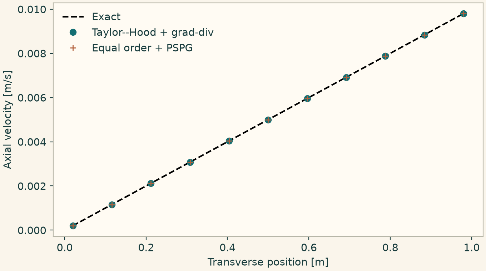
Mixed FE velocity slices at the end of the accelerating Couette run.
10.2.13 Compare pressure correction and a coupled FV solve
For an initially perturbed Couette profile, use Rhie–Chow face fluxes with two different velocity-pressure algorithms. PISO corrects pressure and face flux in a loop. The coupled algorithm solves a larger stage with the same physical constraints. Compare the final cell values.
This listing exercises PISO, CoupledVelocityPressure, RhieChow, AlgebraicMultigrid.
import numpy as np
import matplotlib.pyplot as plt
import onesimulation_plot_theme as theme
from onesim.cad.d3 import Box
from onesim.materials import NewtonianFluid
from onesim.meshing import PeriodicPair, StructuredHexahedralMesher
from onesim.numerics.coupled_systems import CoupledVelocityPressure, PISO
from onesim.numerics.discretization import Numerics
from onesim.numerics.fvm import (
CentralDifference, FiniteVolume, LeastSquaresGradient, LinearUpwind, RhieChow,
)
from onesim.numerics.linear import AlgebraicMultigrid, ConjugateGradient, SparseDirect
from onesim.numerics.nonlinear import Newton
from onesim.numerics.time import BackwardEuler
from onesim.physics.hydrodynamics import FixedVelocity, IncompressibleNavierStokes
from onesim.simulation import Problem, Simulation
from onesim.simulation.field_constraints import MeanValue
from onesim.simulation.initial_conditions import InitialValue
from onesim.simulation.problem_definition.boundaries import PeriodicBoundary
box = Box(length=1, width=1, height=1)
model = IncompressibleNavierStokes(
domain=box.volume, material=NewtonianFluid(density=1, dynamic_viscosity=0.02),
)
def initial(y):
return np.column_stack((y + 0.1 * np.sin(np.pi * y), 0 * y, 0 * y))
periods = (
PeriodicPair(box.boundaries.x_min, box.boundaries.x_max),
PeriodicPair(box.boundaries.z_min, box.boundaries.z_max),
)
problem = Problem(
name="FV Couette flow", geometry=box, physics=(model,),
boundary_conditions=(
FixedVelocity(physics=model, boundary=box.boundaries.y_min, value=(0, 0, 0)),
FixedVelocity(physics=model, boundary=box.boundaries.y_max, value=(1, 0, 0)),
*(PeriodicBoundary(physics=model, pair=pair) for pair in periods),
),
initial_conditions=(InitialValue(model.velocity, initial),),
constraints=(MeanValue(model.pressure, 2.0),),
)
mesh = StructuredHexahedralMesher(cells=(3, 8, 3)).generate(box)
spatial = FiniteVolume(
convection=LinearUpwind(), diffusion=CentralDifference(),
gradient=LeastSquaresGradient(), velocity_pressure_interpolation=RhieChow(),
face_quadrature_order=1,
)
direct = SparseDirect()
methods = {
"PISO": PISO(
momentum_solver=direct,
pressure_solver=ConjugateGradient(preconditioner=AlgebraicMultigrid()),
relative_tolerance=1e-10, absolute_tolerance=1e-12,
),
"Coupled FV": CoupledVelocityPressure(
momentum_solver=direct, pressure_solver=direct,
nonlinear_solver=Newton(linear_solver=direct, jacobian="analytic"),
),
}
theme.use_theme()
fig, ax = plt.subplots(figsize=(6.8, 3.8), layout="constrained")
solutions = []
for j, (label, coupling) in enumerate(methods.items()):
result = Simulation(
problem=problem, mesh=mesh,
numerics=Numerics(
spatial=spatial, coupling=coupling, time_integrator=BackwardEuler(),
),
).run(start_time=0, end_time=0.04, time_step=0.01)
field = result.field(model.velocity)
x = field.space.dof_coordinates[:, 1]
values = np.asarray(field.values)[:, 0]
solutions.append(values)
ax.plot(x, values - x, "o" if j == 0 else "+", label=label)
np.testing.assert_allclose(*solutions, atol=1e-5)
ax.set(xlabel="Transverse position [m]", ylabel="Velocity above linear profile [m/s]")
ax.legend(frameon=False)
plt.show()
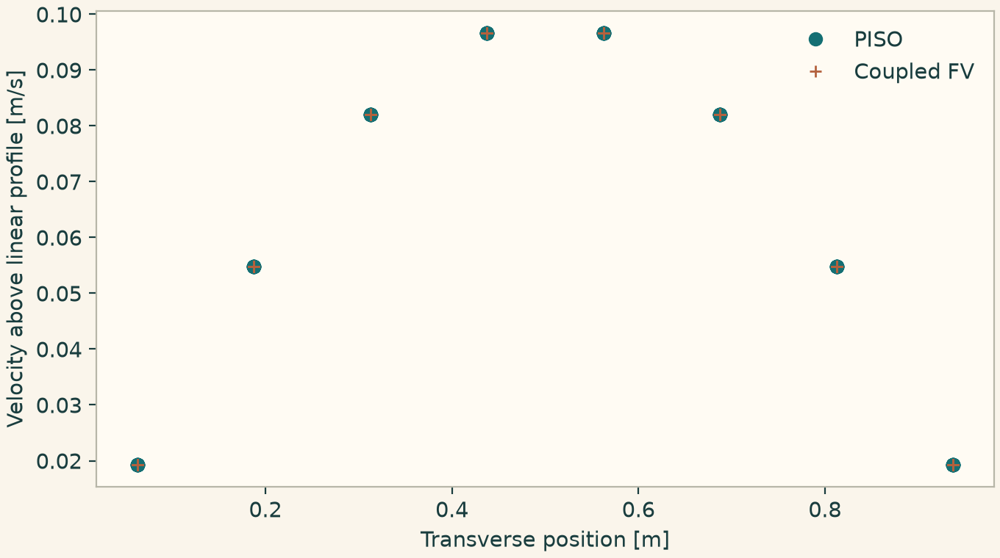
Cell-centered velocity perturbation after pressure correction or a coupled stage.
10.2.14 Select the full Jacobian-free solver name
Run the same radiation balance from the nonlinear comparison with the full declaration name. The implicit time integrator supplies the nonlinear stage and GMRES solves its Krylov systems.
This listing exercises JacobianFreeNewtonKrylov.
import numpy as np
from onesim.cad.geometry import LumpedDomain
from onesim.meshing import LumpedMesh
from onesim.numerics import Numerics
from onesim.numerics.discretization import LumpedParameters
from onesim.numerics.linear import GMRES
from onesim.numerics.nonlinear import JacobianFreeNewtonKrylov
from onesim.numerics.time import BackwardEuler
from onesim.physics.heat_transfer import (
RadiationCooling,
ThermalGreyDiffuseRadiationBoundary,
)
from onesim.simulation import Problem, Simulation
from onesim.simulation.initial_conditions import InitialValue
domain = LumpedDomain()
model = RadiationCooling(
domain=domain.system,
heat_capacity=2,
radiating_area=0.3,
radiation=ThermalGreyDiffuseRadiationBoundary(
condition_id="radiation",
emissivity=0.5,
ambient_temperature=1,
stefan_boltzmann=0.02,
),
)
problem = Problem(
name="Nonlinear cooling stage",
geometry=domain,
physics=(model,),
initial_conditions=(InitialValue(model.temperature, 2.0),),
)
solver = JacobianFreeNewtonKrylov(
linear_solver=GMRES(), relative_tolerance=1e-11, absolute_tolerance=1e-12
)
result = Simulation(
problem=problem, mesh=LumpedMesh(domain),
numerics=Numerics(
spatial=LumpedParameters(), time_integrator=BackwardEuler(),
nonlinear_solver=solver,
),
).run(start_time=0, end_time=1, time_step=0.05)
temperature = np.asarray(result.field(model.temperature).values).item()
assert 1.0 < temperature < 2.0
print(temperature)10.2.15 Apply block and Schur preconditioners to a saddle system
The last two rows are exact constraints with a zero diagonal block. The block sweep uses independently invertible diagonal subblocks of a shifted preconditioning matrix. The Schur method works on the original saddle matrix and its action agrees with the full solve.
This listing exercises BlockPreconditioner, SchurPreconditioner.
from types import SimpleNamespace
import numpy as np
from scipy.sparse import csr_matrix
from onesim.numerics.linear import BlockPreconditioner, GMRES, SchurPreconditioner, SparseDirect
from onesim.numerics.linear.contracts.operators.linear_operator import LinearOperatorProperties
a = np.array([[3.0, 0.2], [0.2, 2.0]])
b = np.array([[1.0, 2.0], [2.0, -1.0]])
matrix = np.block([[a, b.T], [b, np.zeros((2, 2))]])
shifted = matrix + np.diag([0.0, 0.0, 1.0, 1.0])
right = np.array([1.0, 2.0, -3.0, 4.0])
def port(values):
return SimpleNamespace(
properties=LinearOperatorProperties(
"saddle", values.shape, "assembled", block_sizes=(2, 2),
),
to_scipy_sparse=lambda: csr_matrix(values),
)
block = BlockPreconditioner(
solvers=(SparseDirect(), SparseDirect()), sweep="lower",
).build()
block.setup(port(shifted))
u = np.linalg.solve(a, right[:2])
np.testing.assert_allclose(block.apply(right), np.r_[u, right[2:] - b @ u])
schur = SchurPreconditioner(
solvers=(SparseDirect(), GMRES(relative_tolerance=1e-13)),
).build()
schur.setup(port(matrix))
np.testing.assert_allclose(matrix @ schur.apply(right), right, atol=1e-12)
print(schur.apply(right))10.2.16 Enforce tangential potential and augment the Coulomb constraint
Solve a uniform magnetic patch with a weak tangential potential and compare it with constraint augmentation under strong tangential enforcement. The augmentation changes the primal matrix while retaining the mixed constraint. Check the resulting magnetic flux against the exact curl.
This listing exercises HcurlNitsche, ConstraintAugmentation.
import numpy as np
import matplotlib.pyplot as plt
import onesimulation_plot_theme as theme
from onesim.cad.d3 import Box
from onesim.materials import VacuumPermeability
from onesim.meshing import StructuredTetrahedralMesher
from onesim.numerics import Numerics
from onesim.numerics.fem import ConstraintAugmentation, FiniteElement, HcurlNitsche, Nedelec
from onesim.numerics.linear import SparseDirect
from onesim.physics.magnetostatics import (
CoulombGauge,
MagneticPotentialBoundary,
MagneticVectorPotential,
Magnetostatics,
)
from onesim.simulation import Problem, Simulation
box = Box(length=1, width=1, height=1)
model = Magnetostatics(
domain=box.volume,
permeability=VacuumPermeability(),
formulation=MagneticVectorPotential(
gauge=CoulombGauge(multiplier_reference_dof=0)
),
)
def vector_potential(x, y, z):
return np.column_stack((-0.5 * y, 0.5 * x, np.zeros_like(x)))
problem = Problem(
name="Uniform B patch",
geometry=box,
physics=(model,),
boundary_conditions=(
MagneticPotentialBoundary(
physics=model, boundary=box.boundaries.all, value=vector_potential
),
),
)
mesh = StructuredTetrahedralMesher(cells=(2, 2, 2)).generate(box)
choices = {
"Tangential Nitsche": FiniteElement(
element=Nedelec(1), boundary_enforcement=HcurlNitsche(50)
),
"Constraint augmentation": FiniteElement(
element=Nedelec(1), stabilization=ConstraintAugmentation(0.7)
),
}
x = np.linspace(0.02, 0.98, 101)
points = np.column_stack((x, np.full_like(x, 0.37), np.full_like(x, 0.51)))
theme.use_theme()
fig, ax = plt.subplots(figsize=(6.8, 3.8), layout="constrained")
ax.plot(x, np.ones_like(x), "k--", label="Exact Bz")
for i, (label, spatial) in enumerate(choices.items()):
result = Simulation(
problem=problem, mesh=mesh,
numerics=Numerics(spatial=spatial, linear_solver=SparseDirect()),
).solve_stationary()
flux = result.field(model.magnetic_flux_density).evaluate(points)
np.testing.assert_allclose(flux[:, 2], 1.0, atol=1e-8)
ax.plot(x[i::8], flux[i::8, 2], "o" if i == 0 else "+", label=label)
ax.set(xlabel="World x [m]", ylabel="Magnetic flux density [T]")
ax.legend(frameon=False)
plt.show()
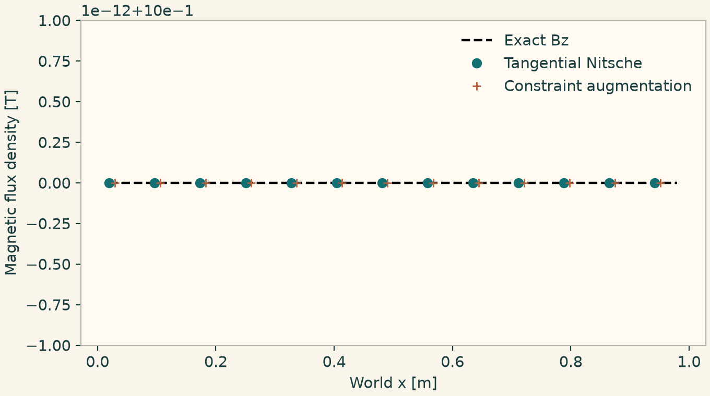
Computed axial magnetic flux for two H(curl) boundary and constraint selections.
10.2.17 Recover an affine displacement and Cauchy stress
Impose an affine displacement on a hexahedral block. The boundary-aware least-squares gradient reconstructs the strain and the selected central flux applies the full elastic stress. Affine data provide a direct displacement check at every cell center.
This listing exercises BoundaryLeastSquaresGradient, CentralElasticStress.
import numpy as np
from onesim.cad.d3 import Box
from onesim.materials import IsotropicSolid
from onesim.meshing import StructuredHexahedralMesher
from onesim.numerics.discretization import Numerics
from onesim.numerics.fvm import BoundaryLeastSquaresGradient, CentralElasticStress, FiniteVolume
from onesim.numerics.linear import SparseDirect
from onesim.physics.solid_mechanics import FixedDisplacement, LinearElasticity
from onesim.simulation import Problem, Simulation
box = Box(length=1, width=1, height=1)
material = IsotropicSolid(
density=1, specific_heat_capacity=1, thermal_conductivity=1,
youngs_modulus=100, poisson_ratio=0.3, thermal_expansion_coefficient=0,
)
solid = LinearElasticity(domain=box.volume, material=material)
def displacement(x, y, z):
return np.stack((0.001 * x + 0.0003 * y, -0.0002 * y, 0.0004 * z), axis=-1)
problem = Problem(
name="FV elasticity patch", geometry=box, physics=(solid,),
boundary_conditions=(FixedDisplacement(
physics=solid, boundary=box.boundaries.all, value=displacement,
),),
)
result = Simulation(
problem=problem, mesh=StructuredHexahedralMesher(cells=(4, 4, 4)).generate(box),
numerics=Numerics(
spatial=FiniteVolume(
gradient=BoundaryLeastSquaresGradient(), diffusion=CentralElasticStress(),
),
linear_solver=SparseDirect(),
),
).solve_stationary()
field = result.field(solid.displacement)
np.testing.assert_allclose(
field.values, displacement(*field.space.dof_coordinates.T), atol=1e-11
)
stress = np.asarray(result.field(solid.stress).values)
np.testing.assert_allclose(stress, np.broadcast_to(stress[0], stress.shape), atol=1e-10)
print(stress[0])10.2.18 Project a quadratic onto physical cell averages
Project the initial function using volume quadrature. Its cell means differ from the values at the centers for a quadratic. The total discrete integral still matches the exact volume integral.
This listing exercises CellAverageProjection.
import numpy as np
import matplotlib.pyplot as plt
import onesimulation_plot_theme as theme
from onesim.cad.d3 import Box
from onesim.meshing import StructuredHexahedralMesher
from onesim.numerics.discretization import CellAverageProjection
from onesim.numerics.fvm.backends.volume.scalar_diffusion_model import PolyhedralCellSpace
from onesim.numerics.fvm.kernels.diffusion.polyhedral_geometry import PolyhedralFiniteVolumeGeometry
from onesim.simulation import FieldDefinition, PhysicsModel
from onesim.simulation.initial_conditions import InitialValue
class Scalar(PhysicsModel):
FIELD_DEFINITIONS = (FieldDefinition("scalar", "1"),)
box = Box(length=1, width=1, height=1)
mesh = StructuredHexahedralMesher(cells=(12, 2, 2)).generate(box)
space = PolyhedralCellSpace(PolyhedralFiniteVolumeGeometry(mesh), None)
project = CellAverageProjection(quadrature_order=4)
model = Scalar(domain=box.volume)
initial = InitialValue(model.field("scalar"), lambda x: x ** 2)
mean = project.project(initial=initial, space=space, time=0.0)
x = space.dof_coordinates[:, 0]
dx = 1 / 12
np.testing.assert_allclose(mean, x ** 2 + dx ** 2 / 12, atol=1e-13)
np.testing.assert_allclose(np.mean(mean), 1 / 3, atol=1e-13)
theme.use_theme()
fig, ax = plt.subplots(figsize=(6.8, 3.8), layout="constrained")
ax.scatter(x, mean, label="Cell average")
s = np.linspace(0, 1, 150)
ax.plot(s, s ** 2, label="Initial field")
ax.set(xlabel="World x [m]", ylabel="Projected scalar")
ax.legend(frameon=False)
plt.show()
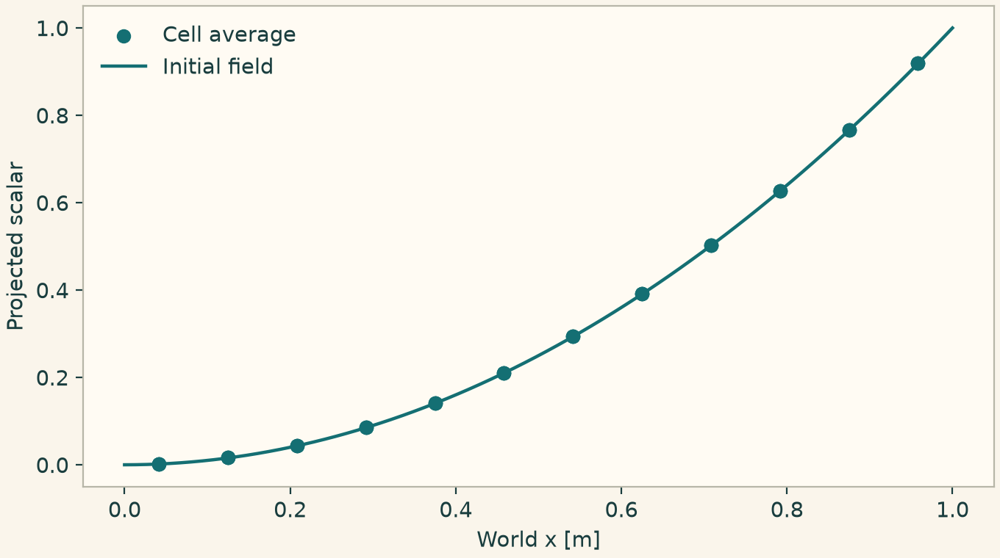
Physical cell means compared with the underlying quadratic.
10.2.19 Transfer solved temperatures to receiver points and a global input
Solve the same affine temperature field on FE nodes and FV cells. Evaluate the FE interpolant and the piecewise-constant FV field at receiver points. Average the FE field by physical volume and broadcast the global value uniformly back to spatial coordinates.
This listing exercises GlobalBroadcastTransfer, SpatialAverageTransfer, CellToQuadratureProjection, FieldInterpolation.
from types import SimpleNamespace
import numpy as np
import matplotlib.pyplot as plt
import onesimulation_plot_theme as theme
from onesim.cad.d3 import Box
from onesim.cad.geometry import LumpedDomain
from onesim.materials import IsotropicSolid
from onesim.meshing import LumpedMesh, StructuredHexahedralMesher
from onesim.meshing.generation.backends.structured.lumped import GlobalSpace
from onesim.numerics.discretization import Numerics
from onesim.numerics.fem import FiniteElement, Lagrange
from onesim.numerics.field_transfer import (
CellToQuadratureProjection, FieldInterpolation, GlobalBroadcastTransfer,
SpatialAverageTransfer,
)
from onesim.numerics.fvm import CentralDifference, FiniteVolume, LeastSquaresGradient
from onesim.numerics.linear import SparseDirect
from onesim.physics.heat_transfer import FixedTemperature, HeatConduction
from onesim.physics.systems import ThermalCapacitance
from onesim.simulation import FieldDefinition, PhysicsModel, Problem, Simulation
class Receiver(PhysicsModel):
FIELD_DEFINITIONS = (FieldDefinition("temperature", "K", role="input"),)
box = Box(length=1, width=1, height=1)
material = IsotropicSolid(
density=1, specific_heat_capacity=1, thermal_conductivity=1,
youngs_modulus=100, poisson_ratio=0.3, thermal_expansion_coefficient=0,
)
heat = HeatConduction(domain=box.volume, material=material)
problem = Problem(
name="Affine transfer source", geometry=box, physics=(heat,),
boundary_conditions=(FixedTemperature(
physics=heat, boundary=box.boundaries.all, value=lambda x: 300 + 20 * x,
),),
)
mesh = StructuredHexahedralMesher(cells=(8, 3, 3)).generate(box)
receiver_mesh = StructuredHexahedralMesher(cells=(9, 2, 2)).generate(box)
target = Receiver(domain=box.volume).field("temperature")
x = np.linspace(0.003, 0.997, 161)
points = np.column_stack((x, np.full_like(x, 0.32), np.full_like(x, 0.41)))
theme.use_theme()
fig, ax = plt.subplots(figsize=(6.8, 3.8), layout="constrained")
for spatial, transfer in (
(FiniteElement(element=Lagrange(1)), FieldInterpolation()),
(FiniteVolume(diffusion=CentralDifference(), gradient=LeastSquaresGradient()), CellToQuadratureProjection()),
):
result = Simulation(
problem=problem, mesh=mesh,
numerics=Numerics(spatial=spatial, linear_solver=SparseDirect()),
).solve_stationary()
source = result.field(heat.temperature)
samples = transfer.bind(
source=source, target=target, target_mesh=receiver_mesh
).evaluate(points)
ax.plot(x, samples, label=type(transfer).__name__)
if isinstance(transfer, FieldInterpolation):
finite_element_temperature = source
np.testing.assert_allclose(samples, 300 + 20 * x, atol=1e-9)
domain = LumpedDomain()
global_mesh = LumpedMesh(domain)
body = ThermalCapacitance(
domain=domain.system, heat_capacity=1, conductance=1, ambient_temperature=None,
)
average = SpatialAverageTransfer(quadrature_order=4).bind(
source=finite_element_temperature, target=body.ambient, target_mesh=global_mesh,
)
mean = np.asarray(average.samples).reshape(-1)
np.testing.assert_allclose(mean, [310.0], atol=1e-9)
global_source = SimpleNamespace(reference=body.temperature, space=GlobalSpace(global_mesh))
broadcast = GlobalBroadcastTransfer().receiver_evaluator(
evaluator=global_source, target_mesh=receiver_mesh
)
uniform = broadcast.restore_samples(mean).evaluate(points)
np.testing.assert_allclose(uniform, 310.0, atol=1e-9)
ax.plot(x, uniform, "--", label="Broadcast volume mean")
ax.set(xlabel="World x [m]", ylabel="Receiver temperature [K]")
ax.legend(frameon=False)
plt.show()
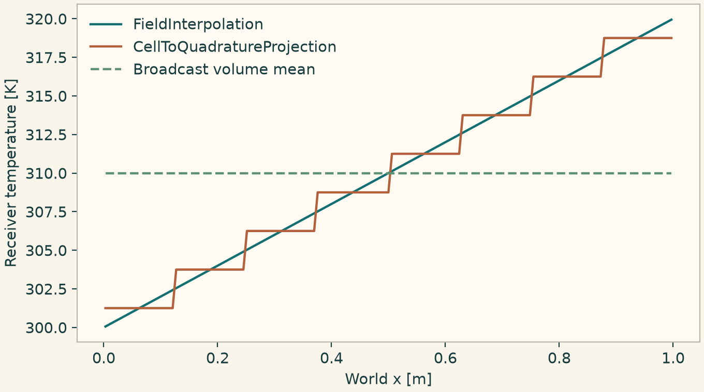
Pointwise FE and FV transfer values, with the spatial mean broadcast as a constant.
10.2.20 Transfer an electric field through a periodic FV seam
Solve a linear Poisson potential on a box and evaluate its field on the interior cylindrical receiver. The physical voltage jump over the axial period is supplied explicitly. Check both the vector field and the signed potential difference across the periodic link.
This listing exercises ElectricFieldToFaces, PeriodicPotentialTrace.
import numpy as np
from onesim.cad.d3 import Box, Cylinder
from onesim.materials import VacuumPermittivity
from onesim.meshing import PeriodicPair, StructuredCylindricalMesher, StructuredTetrahedralMesher
from onesim.numerics.discretization import Numerics
from onesim.numerics.fem import FiniteElement, Lagrange
from onesim.numerics.field_transfer import ElectricFieldToFaces, PeriodicPotentialTrace
from onesim.numerics.fvm.kernels.diffusion.cylindrical_geometry import CylindricalFiniteVolumeGeometry
from onesim.numerics.linear import SparseDirect
from onesim.physics.electrostatics import FixedPotential, PoissonEquation
from onesim.simulation import FieldDefinition, PhysicsModel, Problem, Simulation
class Receiver(PhysicsModel):
FIELD_DEFINITIONS = (
FieldDefinition("electric_field", "V/m", ("x", "y", "z"), "input"),
)
box = Box(length=1, width=1, height=1)
mesh = StructuredTetrahedralMesher(cells=(2, 2, 2)).generate(box)
model = PoissonEquation(domain=box.volume, permittivity=VacuumPermittivity())
source = Simulation(
problem=Problem(
name="Affine Poisson potential", geometry=box, physics=(model,),
boundary_conditions=(FixedPotential(
physics=model, boundary=box.boundaries.all,
value=lambda x, y, z: 2 * x - 3 * y + 4 * z,
),),
),
mesh=mesh, numerics=Numerics(
spatial=FiniteElement(element=Lagrange(2)), linear_solver=SparseDirect(),
),
).solve_stationary().field(model.electric_field)
tube = Cylinder(radius=0.05, length=0.3, origin=(0.3, 0.3, 0.3))
receiver_mesh = StructuredCylindricalMesher(
radial_cells=2, azimuthal_cells=8, axial_cells=4,
periodic_pairs=(PeriodicPair(tube.boundaries.bottom, tube.boundaries.top),),
).generate(tube)
target = Receiver(domain=tube.volume).field("electric_field")
transfer = ElectricFieldToFaces(
source_mesh=mesh, target_mesh=receiver_mesh,
periodic_trace=PeriodicPotentialTrace(potential_jump=4 * tube.length),
).bind(source=source, target=target, target_mesh=receiver_mesh)
expected = np.array([-2.0, 3.0, -4.0])
seams = 0
for face in CylindricalFiniteVolumeGeometry(receiver_mesh).faces:
data = transfer.face_data(face)
np.testing.assert_allclose(
data.electric_field, np.broadcast_to(expected, data.electric_field.shape),
atol=1e-9,
)
if face.axis == 2 and face.index[2] == receiver_mesh.shape[2]:
delta = receiver_mesh.cell_centers[face.right] - receiver_mesh.cell_centers[face.left]
delta += tube.length * np.asarray(tube.axis)
np.testing.assert_allclose(data.potential_difference, -expected @ delta)
seams += 1
assert seams == 16
print("Verified periodic faces:", seams)10.2.21 Transfer native FE density conservatively to FV cells
Integrate a constant native FE density over its overlap with the cylindrical FV cells. The receiver uses full cell volumes in the denominator. Multiplying the received means by those volumes recovers the integrated power.
This listing exercises ConservativeVolumeTransfer.
import numpy as np
import matplotlib.pyplot as plt
import onesimulation_plot_theme as theme
from onesim.cad.d3 import Cylinder
from onesim.meshing import StructuredCylindricalMesher
from onesim.numerics.fem.backends.spaces.tetrahedral.spaces import LagrangeTetrahedralSpace
from onesim.numerics.field_transfer import ConservativeVolumeTransfer
from onesim.numerics.field_transfer.evaluation.execution.conservative.conservative_volume_transfer import (
CylindricalOverlapPlan,
)
from onesim.results.sampling.samples.field_samples import FEStateEvaluator
from onesim.simulation import FieldDefinition, PhysicsModel
class Heating(PhysicsModel):
FIELD_DEFINITIONS = (FieldDefinition("power", "W/m^3", role="derived"),)
tube = Cylinder(radius=1.0, length=1.0)
mesh = StructuredCylindricalMesher(
radial_cells=2, azimuthal_cells=4, axial_cells=2,
).generate(tube)
vertices = np.array([
[0.1, 0.1, 0.1], [0.4, 0.1, 0.1], [0.1, 0.4, 0.1], [0.1, 0.1, 0.4],
])
space = LagrangeTetrahedralSpace(vertices, np.array([[0, 1, 2, 3]]), order=2)
field = Heating(domain=tube.volume).field("power")
source = FEStateEvaluator(field, space)
plan = CylindricalOverlapPlan(ConservativeVolumeTransfer(), source, mesh)
density, evidence = plan.integrate(np.full(space.dof_count, 2.0), layout="owned")
power = np.asarray(density) * mesh.cell_volumes
expected = 2.0 * sum(space.geometry.volumes)
np.testing.assert_allclose(power.sum(), expected, rtol=2e-8)
np.testing.assert_allclose(evidence.whole_source_integral, expected, rtol=2e-8)
theme.use_theme()
fig, ax = plt.subplots(figsize=(6.8, 3.8), layout="constrained")
ax.bar(np.arange(mesh.cell_count), power)
ax.set(xlabel="Receiver cell index", ylabel="Integrated power [W]")
plt.show()
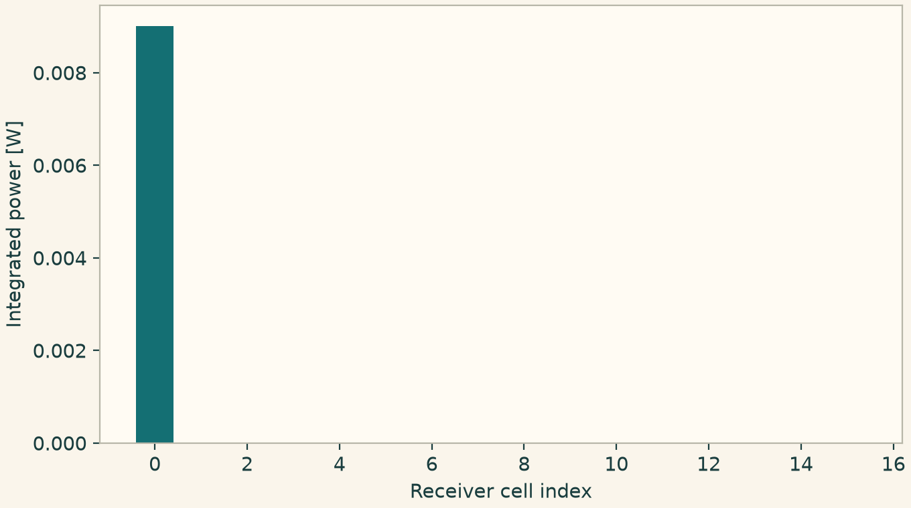
Integrated power deposited in the receiving FV cells.
10.2.22 Advance a wet front with an active-set Jacobian
Use the same wet/dry policy in the hydrostatic flux and in Newton. The selected generalized Jacobian releases dry cells when the physical flux brings water into them. Check positivity and integrated water volume at the accepted state.
This listing exercises WetDryActiveSet.
import numpy as np
import matplotlib.pyplot as plt
import onesimulation_plot_theme as theme
from onesim.cad.d1 import Line
from onesim.meshing import StructuredLineMesher
from onesim.numerics.discretization import Numerics
from onesim.numerics.fvm import FiniteVolume, HydrostaticReconstruction, Rusanov, WetDryActiveSet
from onesim.numerics.linear import SparseDirect
from onesim.numerics.nonlinear import Newton
from onesim.numerics.time import BackwardEuler
from onesim.physics.hydrodynamics import TopographicShallowWater
from onesim.simulation import Problem, Simulation
from onesim.simulation.initial_conditions import InitialValue
from onesim.simulation.problem_definition.boundaries import ReflectingWall
line = Line(start=(0, 0, 0), end=(10, 0, 0))
water = TopographicShallowWater(domain=line.line, bed_elevation=0.0)
problem = Problem(
name="Wet front", geometry=line, physics=(water,),
initial_conditions=(
InitialValue(water.depth, lambda x: np.where(x < 5, 1.0, 0.0)),
InitialValue(water.discharge, 0.0),
),
boundary_conditions=(ReflectingWall(physics=water, boundary=line.boundaries.all),),
)
policy = WetDryActiveSet()
result = Simulation(
problem=problem, mesh=StructuredLineMesher(cells=64).generate(line),
numerics=Numerics(
spatial=FiniteVolume(
convection=Rusanov(),
provider=HydrostaticReconstruction(dry_linearization=policy),
),
time_integrator=BackwardEuler(),
nonlinear_solver=Newton(
linear_solver=SparseDirect(), jacobian=policy,
relative_tolerance=1e-10, absolute_tolerance=1e-12,
),
),
).run(start_time=0, end_time=0.03, time_step=0.003)
h = result.field(water.depth)
np.testing.assert_allclose(h.integrate().value, h.integrate(time=0).value, atol=1e-9)
assert np.min(h.values) >= 0
x = h.space.dof_coordinates[:, 0]
theme.use_theme()
fig, ax = plt.subplots(figsize=(6.8, 3.8), layout="constrained")
ax.step(x, h.at(0).values, where="mid", label="Initial")
ax.step(x, h.values, where="mid", label="After 0.03 s")
ax.set(xlabel="Position [m]", ylabel="Depth [m]", xlim=(3.9, 6.1))
ax.legend(frameon=False)
plt.show()
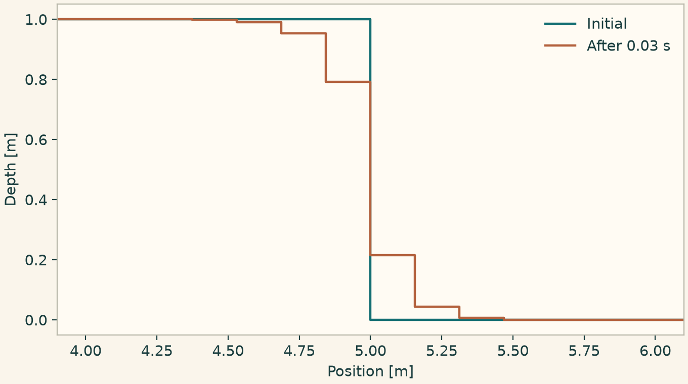
Depth before and after a wet/dry implicit step sequence.
10.2.23 Reconstruct cell-polynomial drift and diffusion fluxes
Use conservative cell-gradient reconstruction in a multidimensional Scharfetter–Gummel flux. Interior cells provide a resolution comparison without the imposed external face laws. The reference differentiates the sinusoidal density analytically.
This listing exercises CellGradientReconstruction.
import numpy as np
import matplotlib.pyplot as plt
import onesimulation_plot_theme as theme
from onesim.cad.d3 import Box
from onesim.meshing import StructuredHexahedralMesher
from onesim.numerics.fvm import (
BarthJespersenLimiter, CellGradientReconstruction, FiniteVolume, ScharfetterGummel,
)
from onesim.numerics.fvm.backends.volume.plasma_geometry import bind_plasma_geometry
velocity = np.array([0.2, -0.3, 0.4])
diffusion = 0.03
k = 2 * np.pi
sizes = (6, 9, 12)
errors = []
box = Box(length=1, width=1, height=1)
for n in sizes:
mesh = StructuredHexahedralMesher(cells=(n,) * 3).generate(box)
g, _, _ = bind_plasma_geometry(mesh, FiniteVolume())
flux = ScharfetterGummel().bind(
geometry=g, reconstruction=CellGradientReconstruction(),
limiter=BarthJespersenLimiter(),
)
x, y, z = g.mesh.cell_centers.T
mode = 0.1 * np.sin(k * x) + 0.07 * np.cos(k * y) + 0.05 * np.sin(k * z)
derivative = k * (
velocity[0] * 0.1 * np.cos(k * x)
- velocity[1] * 0.07 * np.sin(k * y)
+ velocity[2] * 0.05 * np.cos(k * z)
)
mean_factor = np.sinc(1 / n)
values = 2 + mean_factor * mode
exact = mean_factor * (-derivative - diffusion * k ** 2 * mode)
face = g.selected(g.internal)
count = len(face.points)
speed = tuple(np.full(count, value) for value in velocity)
tensor = tuple(tuple(np.full(count, value) for value in row)
for row in diffusion * np.eye(3))
integrated_flux = flux.internal_flux(
values=values, velocity=speed, diffusivity=tensor, face_geometry=face,
)
rate = -g.divergence[:, g.internal] @ integrated_flux
interior = np.all((g.mesh.cell_centers > 1 / n) &
(g.mesh.cell_centers < 1 - 1 / n), axis=1)
errors.append(np.sqrt(np.mean((rate[interior] - exact[interior]) ** 2)))
assert errors[-1] < 0.55 * errors[0]
theme.use_theme()
fig, ax = plt.subplots(figsize=(6.8, 3.8), layout="constrained")
ax.loglog(sizes, errors, "o-")
ax.set(xlabel="Cells per side", ylabel="Interior RMS rate error")
plt.show()
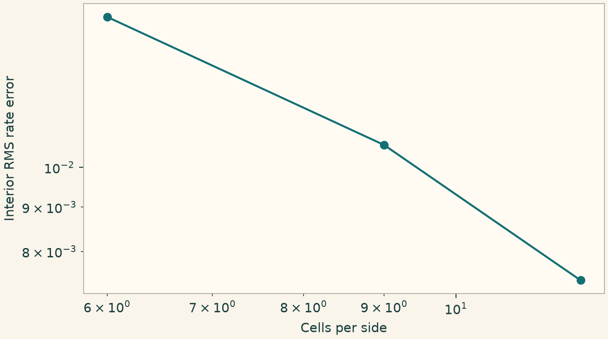
Interior rate error for multidimensional cell-gradient reconstruction.
10.2.24 Evolve a positive shallow-water wave on an FE graph
Use a row-sum mass and a selected depth floor for an ordinary flat-bottom shallow-water balance. The graph viscosity adds a conservative edge dissipation. The accepted depth stays positive and its integral stays constant under periodic boundaries.
This listing exercises InvariantDomainGraphViscosity.
import numpy as np
import matplotlib.pyplot as plt
import onesimulation_plot_theme as theme
from onesim.cad.d1 import Line
from onesim.meshing import PeriodicPair, StructuredLineMesher
from onesim.numerics.discretization import Numerics
from onesim.numerics.fem import FiniteElement, InvariantDomainGraphViscosity, Lagrange, RowSumLumping
from onesim.numerics.fvm import Rusanov
from onesim.numerics.linear import SparseDirect
from onesim.numerics.time import ClassicalRungeKutta4
from onesim.physics.hydrodynamics import ShallowWater, ShallowWaterInvariantDomain
from onesim.simulation import Problem, Simulation
from onesim.simulation.initial_conditions import InitialValue
from onesim.simulation.problem_definition.boundaries import PeriodicBoundary
line = Line(start=(0, 0, 0), end=(1, 0, 0))
water = ShallowWater(domain=line.line)
problem = Problem(
name="Graph shallow water", geometry=line, physics=(water,),
initial_conditions=(
InitialValue(water.depth, lambda x: 1 + 0.08 * np.sin(2 * np.pi * x)),
InitialValue(water.discharge, 0.0),
),
boundary_conditions=(PeriodicBoundary(
physics=water, pair=PeriodicPair(line.boundaries.start, line.boundaries.end),
),),
)
graph = InvariantDomainGraphViscosity(
mass=RowSumLumping(), invariant_domain=ShallowWaterInvariantDomain(depth_floor=0.1),
)
result = Simulation(
problem=problem, mesh=StructuredLineMesher(cells=64).generate(line),
numerics=Numerics(
spatial=FiniteElement(element=Lagrange(1), convection=Rusanov(), stabilization=graph),
time_integrator=ClassicalRungeKutta4(), linear_solver=SparseDirect(),
),
).run(start_time=0, end_time=0.06, time_step=0.001)
h = result.field(water.depth)
assert min(h.values) >= 0.1
np.testing.assert_allclose(h.integrate().value, h.integrate(time=0).value, atol=1e-10)
x = h.space.dof_coordinates[:, 0]
theme.use_theme()
fig, ax = plt.subplots(figsize=(6.8, 3.8), layout="constrained")
ax.plot(x, h.at(0).values, "--", label="Initial")
ax.plot(x, h.values, label="After 0.06 s")
ax.set(xlabel="Position [m]", ylabel="Water depth [m]")
ax.legend(frameon=False)
plt.show()
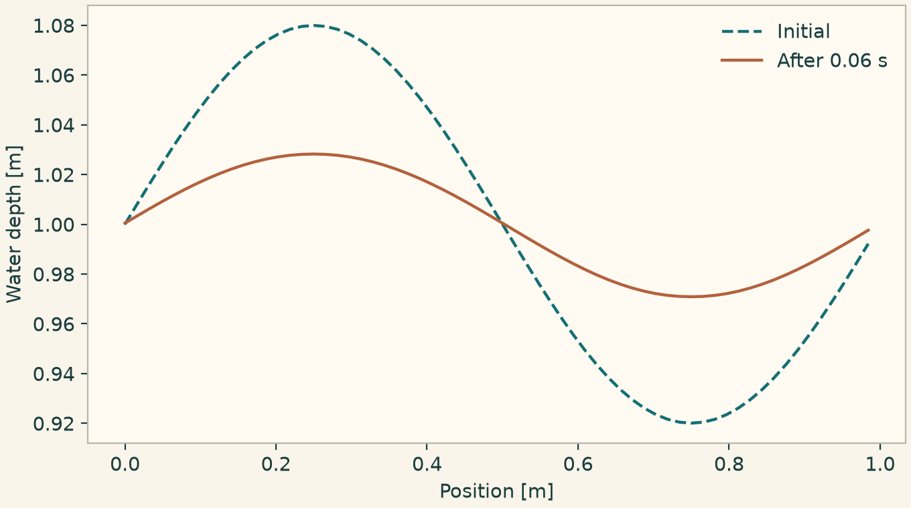
Depth evolution with mass-lumped invariant-domain graph viscosity.
10.2.25 Solve a periodic electromagnetic wave with a mimetic curl
Select the primal-edge Stokes curl on an orthogonal periodic mesh. The impressed current is chosen so that the analytic transverse phasor is a cosine. Plot the phasor and the absorbed power from the same solution.
This listing exercises MimeticCurl.
import numpy as np
import matplotlib.pyplot as plt
import onesimulation_plot_theme as theme
from onesim.cad.d3 import Box
from onesim.materials.electromagnetic import IsotropicElectromagneticMaterial
from onesim.materials.properties.units.constants import VACUUM_PERMEABILITY as MU0
from onesim.materials.properties.units.constants import VACUUM_PERMITTIVITY as EPS0
from onesim.meshing import PeriodicPair, StructuredHexahedralMesher
from onesim.numerics import Numerics
from onesim.numerics.fvm import FiniteVolume, MimeticCurl
from onesim.numerics.linear import ComplexSparseDirect
from onesim.physics.electromagnetics import FrequencyDomainMaxwell
from onesim.simulation import Problem, Simulation
from onesim.simulation.problem_definition.boundaries import PeriodicBoundary
box = Box(length=1, width=1, height=1)
frequency, conductivity = 1e7, 0.001
omega = 2 * np.pi * frequency
epsilon = EPS0 + 1j * conductivity / omega
factor = (4 * np.pi**2 - omega**2 * MU0 * epsilon) / (1j * omega * MU0)
def current(x, y, z):
return np.cos(2 * np.pi * x)[:, None] * np.array([0, factor, 0])
model = FrequencyDomainMaxwell(
domain=box.volume,
frequency=frequency,
impressed_current=current,
material=IsotropicElectromagneticMaterial(
relative_permittivity=1,
relative_permeability=1,
conductivity=conductivity,
),
phasor_convention="exp(-i*omega*t)",
amplitude_convention="peak",
)
conditions = tuple(
PeriodicBoundary(
physics=model,
pair=PeriodicPair(
getattr(box.boundaries, axis + "_min"),
getattr(box.boundaries, axis + "_max"),
),
)
for axis in "xyz"
)
mesh = StructuredHexahedralMesher(cells=(10, 10, 10)).generate(box)
sim = Simulation(
problem=Problem(
name="Mimetic Maxwell wave",
geometry=box,
physics=(model,),
boundary_conditions=conditions,
),
mesh=mesh,
numerics=Numerics(
spatial=FiniteVolume(curl=MimeticCurl()),
linear_solver=ComplexSparseDirect(),
),
)
sim.validate().require_valid()
result = sim.solve_stationary()
x = np.linspace(0.01, 0.99, 121)
points = np.column_stack((x, np.full_like(x, 0.31), np.full_like(x, 0.47)))
ey = result.field(model.electric_field).evaluate(points)[:, 1]
q = np.asarray(result.field(model.absorbed_power_density).evaluate(points)).ravel()
assert np.max(np.abs(ey - np.cos(2 * np.pi * x))) < 0.25
assert q.min() >= 0
theme.use_theme()
fig, (ax, power) = plt.subplots(
2, 1, sharex=True, figsize=(7.2, 4.1), layout="constrained"
)
ax.plot(x, ey.real, label="Real phasor")
ax.plot(x, np.cos(2 * np.pi * x), "--", label="Prescribed reference")
ax.set_ylabel("Electric field y [V/m]")
ax.legend(frameon=False)
power.plot(x, q)
power.set(xlabel="World x [m]", ylabel="Absorbed power [W/m^3]")
plt.show()
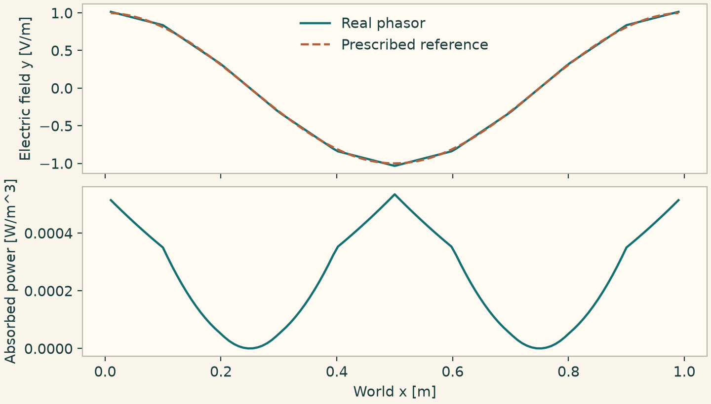
Mimetic curl solution for a driven periodic electromagnetic wave.
10.2.26 Build the oriented complex and compare Hodge maps
Use the same oriented gradient, curl and divergence with two metric maps. The topological compositions vanish independently of the Hodge choice. Interpolate a vector potential with known curl and compare the local constitutive matrices.
This listing exercises FiniteIntegration, WhitneyHodge, OrientedCellComplex, OrthogonalHodge.
import numpy as np
import matplotlib.pyplot as plt
import onesimulation_plot_theme as theme
from onesim.cad.d3 import Box
from onesim.meshing import StructuredHexahedralMesher
from onesim.numerics.fvm import (
FiniteIntegration, OrientedCellComplex, OrthogonalHodge, WhitneyHodge,
)
box = Box(length=1.0, width=0.8, height=1.2)
mesh = StructuredHexahedralMesher(cells=(3, 3, 3)).generate(box)
expected = np.array([0.3, 0.4, 0.7])
theme.use_theme()
fig, axes = plt.subplots(1, 2, figsize=(6.8, 3.5), layout="constrained")
for ax, metric in zip(axes, (WhitneyHodge(), OrthogonalHodge())):
selected = FiniteIntegration(hodge=metric, topology=OrientedCellComplex())
operator = selected.bind_complex(
mesh=mesh, cell_quadrature_order=4, face_quadrature_order=4
)
topology = operator.complex
assert (topology.curl @ topology.gradient).nnz == 0
assert (topology.divergence @ topology.curl).nnz == 0
coefficients = operator.space.interpolate(
lambda p: np.cross(np.broadcast_to(expected, p.shape), p) / 2
)
points, _ = operator.space.quadrature(0)
flux = operator.flux(coefficients, points)
np.testing.assert_allclose(flux, np.broadcast_to(expected, flux.shape), atol=1e-12)
matrix, _ = operator.cell_contribution(
cell=0, curl_coefficient=1.0, mass_coefficient=1.0,
)
ax.imshow(matrix, cmap=theme.DIVERGING, vmin=-5, vmax=5)
ax.set(title=type(metric).__name__, xlabel="Local trial edge", ylabel="Local test edge")
plt.show()
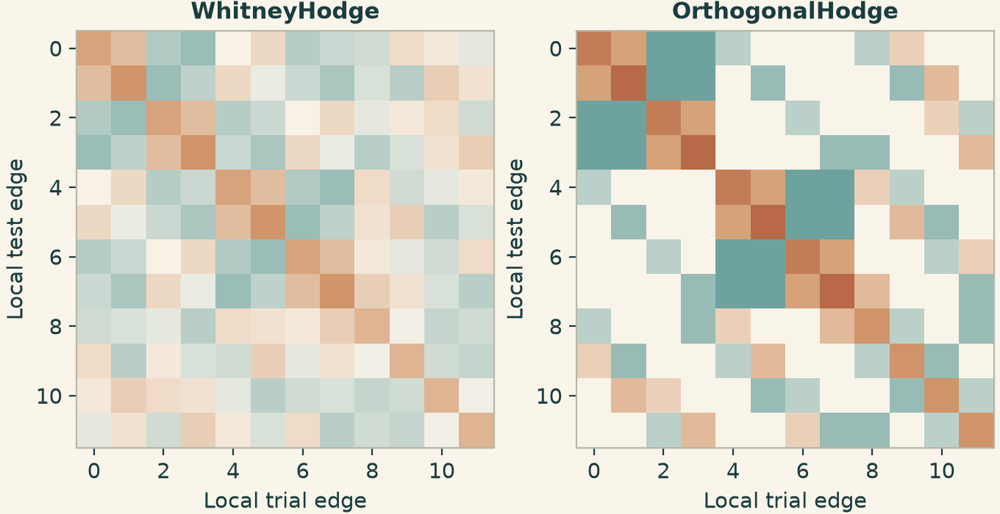
Local edge matrices for consistent Whitney and diagonal orthogonal metrics.
10.2.27 Replay a thermal step with a stationary Maxwell solve
At each accepted thermal step, solve the stationary electromagnetic field, transfer its absorbed power to heat conduction and replay the step while the coupled inputs converge. The conductivity also receives the current temperature through an explicit material input.
This listing exercises QuasiStationaryCoupling.
from dataclasses import dataclass
import numpy as np
import matplotlib.pyplot as plt
import onesimulation_plot_theme as theme
from onesim.cad.d3 import Cylinder
from onesim.materials import IsotropicSolid
from onesim.materials.properties.units.constants import (
VACUUM_PERMEABILITY as MU0, VACUUM_PERMITTIVITY as EPS0,
)
from onesim.meshing import TetrahedralMesher
from onesim.numerics.coupled_systems import QuasiStationaryCoupling
from onesim.numerics.discretization import Numerics
from onesim.numerics.fem import FiniteElement, Lagrange, Nedelec
from onesim.numerics.field_transfer import FiniteElementEvaluation
from onesim.numerics.linear import ComplexSparseDirect, SparseDirect
from onesim.numerics.nonlinear import FixedPoint
from onesim.numerics.time import BackwardEuler
from onesim.physics.electromagnetics import (
CircularWaveguideMode, FrequencyDomainMaxwell, PerfectElectricConductor, WaveguidePort,
)
from onesim.physics.heat_transfer import FixedTemperature, HeatConduction
from onesim.physics.plasma.fluid.models.materials.materials import ColdPlasmaResponse
from onesim.simulation import FieldDefinition, Problem, Simulation
from onesim.simulation.field_connections import FieldCoupling
from onesim.simulation.initial_conditions import InitialValue
from onesim.simulation.problem_definition.declarations.physics.fields.fields import InputPort
@dataclass(frozen=True)
class ThermalConductor:
model_id: str = "temperature-dependent-conductor"
@property
def temperature(self):
return InputPort(self, FieldDefinition("temperature", "K", role="input"))
def fields(self):
return (self.temperature,)
def evaluate(self, *, temperature, frequency, phasor_convention,
amplitude_convention, points, time):
sigma = (0.001 * (1 + 0.01 * (temperature - 300)))[:, None, None] * np.eye(3)
omega = 2 * np.pi * frequency
epsilon = EPS0 * np.eye(3) + 1j * sigma / omega
mu = np.broadcast_to(MU0 * np.eye(3), sigma.shape)
return ColdPlasmaResponse(
epsilon, mu, sigma, np.zeros(len(points)), frequency,
phasor_convention, amplitude_convention,
)
tube = Cylinder(radius=0.05, length=0.08)
mesh = TetrahedralMesher(target_size=0.045).generate(tube)
solid = IsotropicSolid(
density=1, specific_heat_capacity=1, thermal_conductivity=1,
youngs_modulus=1, poisson_ratio=0.3, thermal_expansion_coefficient=0,
)
heat = HeatConduction(domain=tube.volume, material=solid)
material = ThermalConductor()
wave = FrequencyDomainMaxwell(
domain=tube.volume, frequency=2.45e9, material=material,
phasor_convention="exp(-i*omega*t)", amplitude_convention="peak",
)
problem = Problem(
name="Quasistationary heating", geometry=tube, physics=(heat, wave),
boundary_conditions=(
FixedTemperature(physics=heat, boundary=tube.boundaries.all, value=300),
WaveguidePort(physics=wave, boundary=tube.boundaries.bottom,
mode=CircularWaveguideMode("TE11"), incident_power=1),
PerfectElectricConductor(
physics=wave, boundary=tube.boundaries.all - tube.boundaries.bottom,
),
),
initial_conditions=(InitialValue(heat.temperature, 300),),
couplings=(
FieldCoupling(source=wave.absorbed_power_density, target=heat.heating,
transfer=FiniteElementEvaluation()),
FieldCoupling(source=heat.temperature, target=material.temperature,
transfer=FiniteElementEvaluation()),
),
)
result = Simulation(
problem=problem, mesh={heat: mesh, wave: mesh},
numerics={
heat: Numerics(spatial=FiniteElement(element=Lagrange(2)),
linear_solver=SparseDirect(), time_integrator=BackwardEuler()),
wave: Numerics(spatial=FiniteElement(element=Nedelec(2)),
linear_solver=ComplexSparseDirect()),
},
coupling_solver=QuasiStationaryCoupling(
transient_systems=(heat,), stationary_systems=(wave,),
iteration=FixedPoint(relative_tolerance=1e-8, maximum_iterations=30),
),
).run(start_time=0, end_time=4e-5, time_step=1e-5)
z = np.linspace(0.004, 0.076, 100)
points = np.column_stack((np.full_like(z, 0.01), np.zeros_like(z), z))
rise = result.field(heat.temperature).evaluate(points) - 300
assert np.max(rise) > 0
theme.use_theme()
fig, ax = plt.subplots(figsize=(6.8, 3.8), layout="constrained")
ax.plot(1000 * z, 1000 * rise)
ax.set(xlabel="Axial position [mm]", ylabel="Temperature rise [mK]")
plt.show()
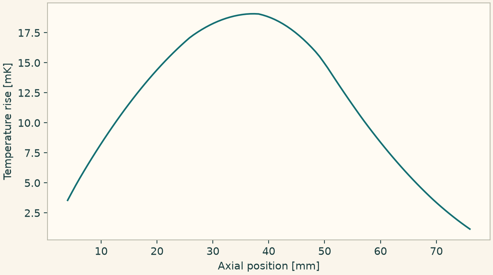
Axial temperature rise after quasistationary electromagnetic heating.